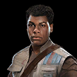
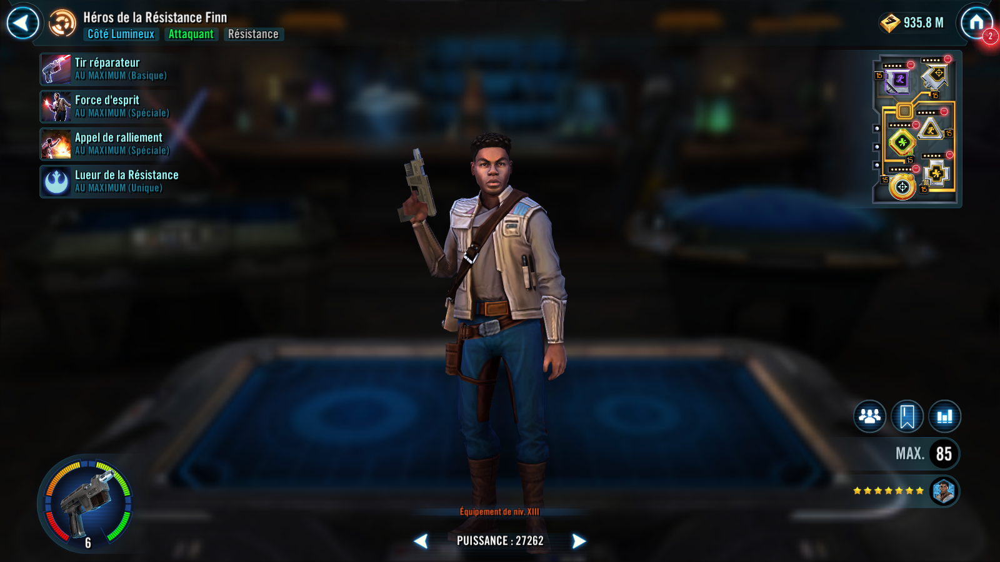
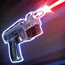
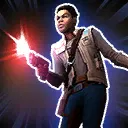
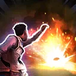

Resistance Hero Finn
Supportive Attacker whose inspiration empowers his allies on the battlefield

Supportive Attacker whose inspiration empowers his allies on the battlefield


Deal Special damage to target enemy, and the weakest Resistance ally recovers 10% Health and Protection. If Resistance Hero Finn is not Inspired, reduce the cooldown of Strength of Will by 1.

Resistance Hero Finn becomes Inspired, and then deals Special damage twice to target enemy, which can't be evaded. Swap Turn Meter with another Resistance ally, and if the target is Resistance Hero Poe he also becomes Inspired. This attack has +10% Defense Penetration and +5% Critical Damage for each Inspired ally.
Inspired: Resistance characters gain bonuses when they are Inspired; this effect expires after receiving 3 critical hits

Dispel debuffs from all allies, deal Special damage to all enemies, and Rally all Resistance allies.
Rallied characters act based on their role:
- Tanks Taunt and gain Critical Hit Immunity for 2 turns
- Attackers assist
- Healers and Supports restore 15% Health and Protection to all allies

All Resistance allies have +100% counter chance, +50% Defense, and +50% Tenacity while Resistance Hero Finn is Inspired.
Additionally, while Resistance Hero Finn is Inspired, when an ally is prevented from using an ability during their turn, they recover 40% Health and Protection and gain 40% Turn Meter.